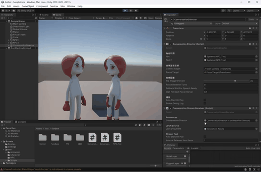

projects
AI NPC Dual-Character System
AI 虚拟人动画
演示视频:

整体架构：

动画系统
总框架：
ARkit 分通道
一共三个 System 负责
ExpressionController：只产出“表情目标值”VisemeController：只产出“口型目标值”LookAtController：只控制骨骼旋转 / 眼球方向
ExpressionController 负责的通道:
browDownLeft / Right
browInnerUp
browOuterUpLeft / Right
cheekPuff
cheekSquintLeft / Right
eyeBlinkLeft / Right
eyeSquintLeft / Right
eyeWideLeft / Right
jawLeft / Right
mouthDimpleLeft / Right
mouthFrownLeft / Right
mouthLeft / Right
mouthShrugLower / Upper
mouthSmileLeft / Right
mouthUpperUpLeft / Right
noseSneerLeft / Right
VisemeController 负责的通道:
jawForward
jawOpen
mouthClose
mouthFunnel
mouthLowerDownLeft / Right
mouthPressLeft / Right
mouthPucker
mouthRollLower
mouthRollUpper
mouthStretchLeft / Right
LookAtController 接管，不直接走 BlendShape:
eyeLookDownLeft / Right
eyeLookInLeft / Right
eyeLookOutLeft / Right
eyeLookUpLeft / Right
eyeBlinkLeft / Right
底层接口
主要组件：
- FaceRendererBinder: 获取所有可用于面部BlendShape控制的Renderer，存入
SkinnedMeshRenderer[] result, 以便于可以统一设置所有组件上相关的形态键

- FaceBlendShapeController：用于统一设置 / 清空某一个形态键
public void ResetAllBlendShapes()
public void SetBlendShape(string blendShapeName, float weight)
public void SetBlendShapeOnRenderer(SkinnedMeshRenderer smr, string blendShapeName, float weight)
动画分层


- Walk：以后用来 handle 跟随行走动画
- UpperLayer：负责说话时的动作
- LookAt：叠加头部动画
说话动作逻辑
- 用动画树（2D Freeform Cartesian）来在一定程度随机生成说话动画
- TalkStyle 0-1
- TalkIntensity 0-1
| 动画 | TalkStyle | TalkIntensity |
|---|---|---|
| talk1_small | 0 | 0 |
| talk1_strong | 0 | 1 |
| talk2_small | 1 | 0 |
| talk2_strong | 1 | 1 |

- Intensity 和表情有关：
private float GetTalkDensity(EmotionType type)
{
switch (type)
{
case EmotionType.Think:
return 0.5f;
case EmotionType.Disaprove:
return 0.6f;
case EmotionType.Aprove:
return 0.2f;
case EmotionType.Angry:
return 0.8f;
case EmotionType.Sad:
return 0f;
default:
return 0f;
}
}
- TalkStyle 为随机在 1 / 2 里筛选
Expression 逻辑
Expression Controller:
Start()
↓
ApplyExpression(当前表情)
Update()
↓
如果表情变了
↓
ApplyExpression(新表情)
外部调用：
SetExpression(...)
↓
ApplyExpression(...)
表情预设：
Happy:
mouthSmileLeft / Right = 80
cheekSquintLeft / Right = 40
eyeSquintLeft / Right = 20
browOuterUpLeft / Right = 10
Surprise:
jawOpen = 60
eyeWideLeft / Right = 80
browInnerUp = 70
browOuterUpLeft / Right = 50
mouthFunnel = 30
Sad:
mouthFrownLeft / Right = 70
browInnerUp = 60
browDownLeft / Right = 30
eyeSquintLeft / Right = 20
jawOpen = 10
Angry:
browDownLeft / Right = 80
eyeSquintLeft / Right = 50
mouthPressLeft / Right = 60
jawForward = 20
编辑器里可以手动调节：

口型逻辑
- Viseme 控制逻辑
Start()
↓
ApplyViseme(VisemeType 当前口型)
Update()
↓
如果口型变了
↓
ApplyViseme(VisemeType 新口型)
外部调用：
SetViseme(VisemeType visemeType)
↓
ApplyViseme(VisemeType visemeType)
Viseme 预设
public enum VisemeType
{
None,
Closed,
A_Open,
A_Wide,
I,
U,
O,
FV,
L,
SZ,
SHCH,
Rest
}
// 设置了例如以下的：
new VisemePreset
{
visemeType = VisemeType.Closed,
blendShapes = new List<BlendShapeValue>
{
new BlendShapeValue { shapeName = "mouthClose", value = 40f },
new BlendShapeValue { shapeName = "mouthPressLeft", value = 35f },
new BlendShapeValue { shapeName = "mouthPressRight", value = 35f },
new BlendShapeValue { shapeName = "jawOpen", value = 0f }
}
},

Blink 逻辑
BlinkController
- 通过
FaceBlendShapeController.SetBlendShape()去控制eyeBlinkLeft和eyeBlinkRight - 核心代码逻辑：
Update()
↓
是否需要眨眼？
↓ 是
StartBlink(): 1. 随机生成眨眼强度 2. _blinkState = BlinkState.Closing;
↓
UpdateBlink() 三个case：不眨眼 / BlinkState.Closing / BlinkState.Opening
↓
Closing：闭眼 0 -> 目标值
↓ 一段时间间隔后 _blinkState = BlinkState.Opening
Opening：睁眼 目标值 -> 0
↓
ScheduleNextBlink()
↓
回到 Update()
LookAt 逻辑
Update()
↓
检查引用和目标是否有效
↓
ComputeEyeTarget()
↓
ComputeHeadTarget()
↓
UpdateEyeLogic()
↓
UpdateHeadLogic()
- compute 部分逻
眼睛：
目标位置
↓
转换到 eyeReference 的局部坐标
↓
取 localOffset.x 计算水平偏移
取 localOffset.y 计算垂直偏移
↓
根据 eyeHorizontalLimit / eyeVerticalLimit 限制最大角度
↓
归一化成 -1 ~ 1
↓
乘以 eyeHorizontalWeight / eyeVerticalWeight
↓
减去当前头部转动量 _currentHeadX
↓
MoveTowards 平滑移动
↓
写入 eyeLook... BlendShape
头：
目标位置
↓
转换到 headReference 的局部坐标
↓
用 atan2(localOffset.x, localOffset.z) 算水平角度
↓
限制在 headHorizontalLimit 范围内
↓
根据距离计算响应强度
↓
归一化成 -1 ~ 1
↓
判断是否超过 deadZone
↓
等待眼睛先转到一定程度
↓
头部开始跟随
↓
MoveTowards 平滑转头
↓
写入 Animator 参数
- update 部分逻辑
眼睛部分：set blend shape：
faceController.SetBlendShape("eyeLookUpLeft", eyeLookUpLeft);
faceController.SetBlendShape("eyeLookUpRight", eyeLookUpRight);
faceController.SetBlendShape("eyeLookDownLeft", eyeLookDownLeft);
faceController.SetBlendShape("eyeLookDownRight", eyeLookDownRight);
动画部分逻辑：

其它
TTS 解决方案
与 tts 的连接逻辑：
使用的是微软的 Azure 服务，使用了 unity 外的 python 脚本
传过去：
class TtsRequest(BaseModel):
text: str
voice: str = "zh-CN-XiaoxiaoNeural"
style: Optional[str] = None
rate: str = "0%"
pitch: str = "0%"
volume: str = "0%"
request_viseme: bool = True
emotion: Optional[str] = "neutral"
传回来：
{
"ok": true,
"audio_base64": "UklGRiQAAABXQVZF...",
"audio_format": "wav",
"sample_rate": 24000,
"channels": 1,
"duration_ms": 1234.5,
"visemes": [
{
"audio_offset_ticks": 500000,
"audio_offset_ms": 50.0,
"viseme_id": 3,
"animation": "..."
}
],
"expression": {
"primary": "neutral",
"intensity": 0.35
},
"words": []
}
- 接收逻辑
SpeakCoroutine(text)
↓
初始化状态
_isPreparing = true
_isReadyToTalk = false
_hasPlaybackStarted = false
_hasPlaybackCompleted = false
talking = false
↓
处理旧的音频 / update audisource 和 visemeSyncPlayer
↓
构造 AzureTtsRequest，想服务器请求 UnityWebRequest POST serverUrl
↓
yield return request.SendWebRequest()等待服务器返回
↓
↓ 如果请求成功
↓
读取 responseJson
JsonUtility.FromJson<AzureTtsResponse>()，设置检验逻辑
↓
↓
audio_base64：需要转换成 AudioClip
↓
Convert.FromBase64String(...) 返回：wavBytes
WavUtility.ToAudioClip(...) 返回：AudioClip clip
↓
↓
同时启动音画逻辑：
把 AudioClip 交给 AudioSource：audioSource.clip = clip;
把 Visemes 交给 visemeSyncPlayer visemeSyncPlayer.LoadTimeline(response.visemes)
↓
↓
音频 + 口型时间线准备完成
_isPreparing = false
_isReadyToTalk = true
↓
等待 talking == true yield return new WaitUntil(() => talking)
↓
AudioSource.Play()
↓
_hasPlaybackStarted = true
_hasPlaybackCompleted = false
↓
visemeSyncPlayer.Play()
↓
_isReadyToTalk = false
↓
如果 resetTalkingAfterPlaybackStarts == true
talking = false
↓
等待音频播放结束
yield return new WaitWhile(() => audioSource.isPlaying)
↓
_hasPlaybackCompleted = true
_speakCoroutine = null
↓
协程结束
- 播放逻辑
- 用代码让 tts 返回类似这样的结构体：
public LipSyncFrame(float timeMs, VisemeType visemeType)
{
this.timeMs = timeMs;
this.visemeType = visemeType;
}
核心代码逻辑：
Update()
↓
检查是否正在播放
↓
检查 audioSource / visemeController 是否有效
↓
检查音频是否结束
↓
如果结束：Stop()
↓
检查时间轴是否为空
↓
读取当前音频播放时间
↓
根据时间推进到对应的口型节点
↓
取得目标口型 target
↓
如果目标口型 != 当前口型
↓
SetCurrentViseme(target)
↓
更新当前口型
- 核心同步原理：
- AzureTtsClients 处同时申请 AudioSource 和 VisemeSyncPlayer
- VisemeSyncPlayer 按照 AudioSource 的时间播放
float currentTimeMs = audioSource.time * 1000f;
VisemeType target = _timeline[_currentIndex].visemeType;
双人调度逻辑
- ConversationStreamReceiver：负责接收输入
StartReading()
↓
StartStreamConversation()
↓
ReadTalkPiece()
↓
EnqueueTalkPiece() // 用Queue 来存储流式输入
↓
.....
↓
CompleteReading()
↓
MarkStreamCompleted()
- ConversationDirector：负责调度 NPC 怎么说、什么时候说、谁听谁
确定说话人 speaker
确定听话人 listener
↓
准备当前句 TTS
↓
等待 TTS ready
↓
listener 进入听状态，看向 speaker
↓
speaker 开始说话
↓
说到 preTriggerPercent 时，提前准备下一句
↓
当前句说完
↓
speaker 结束说话
↓
如果下一句还没来，就进入 Thinking 等待